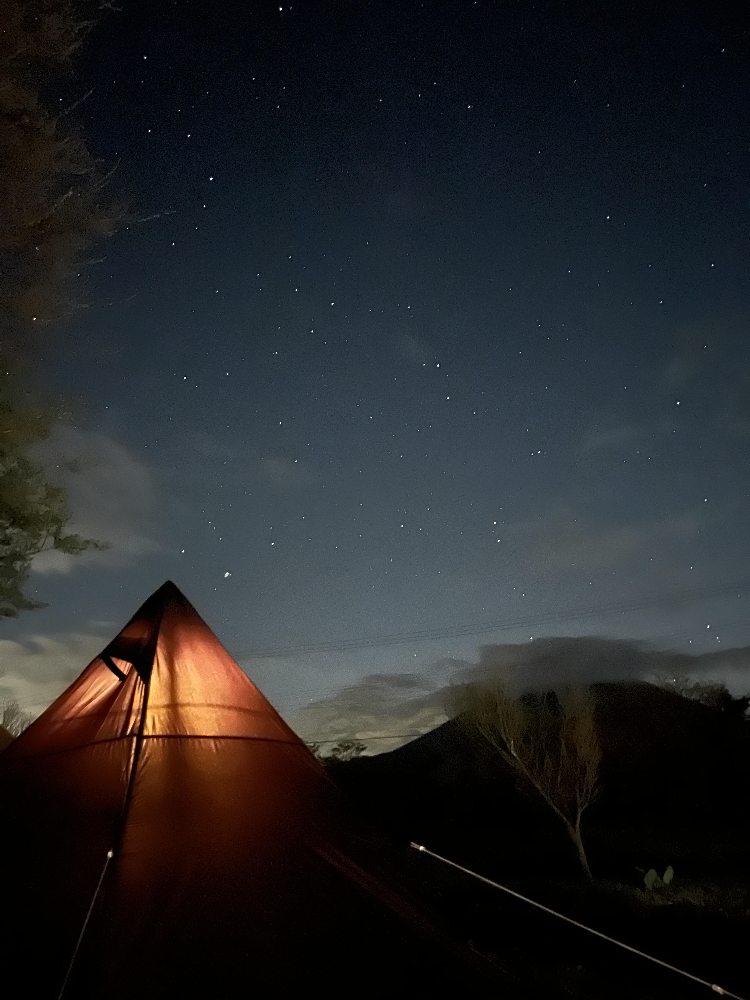

キャンプを始めたいけれど、「テントの種類が多すぎて、何を選べばいいか分からない…」という声を本当に多く聞きます。ですが、安心してください。実は無限にあるように見えるテントも、基本の形は大きく分けて“たった8種類”しかありません。この記事では、初心者の方でも直感的に選べるよう、8つの基本形をスマホでも読みやすいように整理しました。
1. テントは「8つの基本形」を知ればOK
自分に合うテントを見つける近道は、まず形ごとの「得意・不得意」を知ることです。ここさえ押さえれば迷いが激減します。
① ドーム型テント（初心者の王道）
フレーム2本をクロスさせて立ち上げる、最もポピュラーな形。構造がシンプルで設営が簡単、風を受け流す丸いフォルムで強度もある「万能選手」です。
- 特徴： 設営が簡単・風に強い・コンパクト
- 向いている人： 初心者／ソロ／ファミリーすべて
- プロの助言： 最初の一張りとして最も失敗しにくい鉄板タイプ。
② ワンポールテント（見た目がお洒落で簡単）
真ん中に1本のポールを立てるだけの三角形（ティピー型）。ペグを打って中心を持ち上げるだけなので設営スピードはトップクラス。居住性を高めた変形タイプも増えています。
- 特徴： 設営がとてもラク・デザイン性が高い
- 向いている人： 見た目重視／サクッと設営して遊びたい人
③ ツールームテント（家のように快適）
リビング（食事スペース）と寝室が一体化。これ一つでタープ要らず、雨の日もフルクローズして快適に過ごせる「動く家」です。
- 特徴： タープ不要・雨風に強い・居住性が高い
- 向いている人： ファミリー／荷物を減らしたい人
④ ロッジ型テント（レトロで可愛い家そのもの）
壁が垂直に立ち上がった家型。部屋の隅まで広々使えます。昔は重かったですが、いまは素材の進化で扱いやすくなりました。
- 特徴： 室内が広い・レトロでおしゃれ
- 向いている人： 窮屈さが苦手／インテリアを楽しみたい人
⑤ トンネル型テント（広いのに設営が爆速）
アーチ状フレームを並べた“かまぼこ型”。ツールーム並みの広さがありつつ、同じ動作の繰り返しで立つので初心者でも驚くほど簡単。ファミリーに大人気です。
- 特徴： 広い・設営がシンプルで速い
- 向いている人： ファミリー／設営時間を短縮したい人
⑥ パップテント／軍幕（無骨スタイルの象徴）
軍隊由来の、低いタープ風スタイル。基本は床なしで地面の感触を楽しみますが、最近は蚊帳や床付きインナーがある初心者向けモデルも増加中。
- 特徴： 丈夫でシンプル・秘密基地感
- 向いている人： ソロ上級者／無骨な雰囲気が好きな人
⑦ シェルター型テント（自由な巨大リビング）
床なしで屋根と壁だけの大空間。小型テントを中に入れる「カンガルースタイル」がトレンドで、夏は涼しく冬はストーブを囲むリビングとして活躍します。
- 特徴： アレンジ自在・大人数に対応
- 向いている人： 季節問わず楽しみたい人／レイアウトにこだわりたい人
⑧ ワンタッチテント（骨組み付きの時短テント）
折り畳み傘のようにロックを広げるだけ。以前はピクニック向け小型が主流でしたが、いまは宿泊できる大型・二重構造タイプも登場しています。
- 特徴： 究極の設営スピード
- 向いている人： とにかく手軽にキャンプしたい人
2. 【番外編】その他の特殊なテント
形の分類とは少し違う、特殊構造のテントもチェックしておきましょう。
- エアフレームテント： 金属ポールの代わりに空気の柱で自立。ポンプで空気を入れるだけなので設営は楽ですが、本体重量は重め。
- ポップアップテント： 袋から出すだけでバッと広がる簡易テント。公園遊びに最適ですが、フレームが柔らかく風に弱いので本格キャンプ泊には不向きな場合が多い。ワンタッチとは別物と考えましょう。
3. ライフスタイルに合わせてテントも変わる
「最初に買ったテントを一生使い続ける」必要はありません。キャンプ経験が増えると、ほぼ全員がテントを買い替えます。これは失敗ではなく、キャンパーとしての成長の証です。
多くのキャンパーが辿る成長の道（例）
- スタート： ドーム型で基本を覚える
- 慣れ・挑戦： パップテントで不便さを楽しむ
- 快適さ追求： ワンポールや変形型でお洒落に
- 家族が増加： ツールームやトンネル型へ
- 子供が自立： ワンタッチで手軽に、または原点回帰の軍幕へ
人生とともに住む家が変わるように、スタイルが変わればテントの“正解”も変わります。今の自分にフィットするものを選べば、それが正解です。
4. まとめ：テント選びのシンプルなコツ
- 迷ったら、まずは「形」で絞り込む。
- 「誰と」「どこで」「どう過ごすか」で必要な機能は決まる。
- 基本を知れば、選択肢は自然と見えてくる。
- 最適なテントは“あなたの今のライフスタイル”で決まる。
選択肢が多いことは「迷い」ではありません。それぞれの特徴を知り、迷いなく選べたときにこそ本当の自由が生まれます。あなたのキャンプライフが最高に楽しくなる「運命の一張り」は、きっと見つかります。